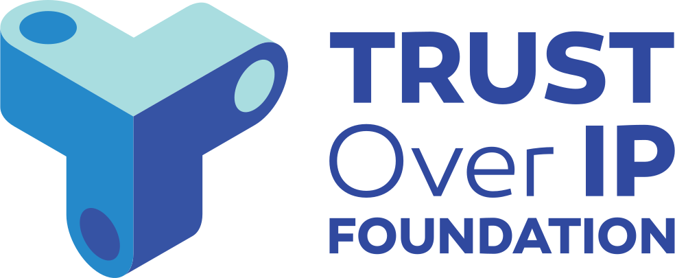

Skip to main content
Home
Enter Documentation
How To‘s
Demo
Video
GitHub token
GitHub
Spec-Up-T

A tool for writing specifications
Basic hosting requirements
Create external references
Hosted on Github
Export to PDF
Let's start
Content Authors
Terminology Authors
Curators